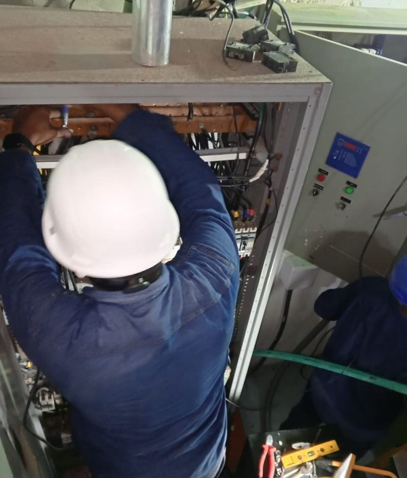

¿Cómo reducir el riesgo de paradas eléctricas industriales?
Equipo técnico NODIA · 28 de noviembre de 2026

Una parada eléctrica no programada en una planta industrial tiene un costo que va más allá de la reparación: producción detenida, compromisos con clientes en riesgo y, en algunos casos, daño a equipos conectados. La mayoría de estas paradas no surgen de la nada — tienen causas identificables que un programa de mantenimiento puede ayudar a anticipar.
Causas frecuentes de paradas no programadas
- Conexiones flojas que generan puntos calientes. Con el tiempo, la vibración y los ciclos térmicos aflojan terminales, lo que eleva la resistencia y la temperatura en ese punto hasta que falla.
- Protecciones desajustadas que no actúan a tiempo ante una sobrecarga o cortocircuito, permitiendo que el daño se propague.
- Desgaste del aislamiento en cables, transformadores o tableros, que no es visible hasta que ya provocó una falla.
- Problemas de calidad de energía (armónicos, desbalances, caídas de tensión) que estresan equipos sensibles de forma acumulativa.
- Ausencia de mantenimiento documentado, que impide saber con certeza el estado real de la instalación.
Qué tipo de mantenimiento ayuda a anticiparlas
Un programa de mantenimiento combina inspecciones que pueden hacerse con el equipo en operación, bajo condiciones de seguridad apropiadas (como la termografía infrarroja, que identifica puntos calientes sin desenergizar), con intervenciones directas que sí requieren desenergización y bloqueo y etiquetado (LOTO) por seguridad — como el ajuste de conexiones o la revisión interna de tableros y protecciones.
El diagnóstico antes que la suposición
Antes de decidir qué intervenir, conviene tener evidencia objetiva: pruebas de resistencia de aislamiento, revisión de protecciones, medición de calidad de energía. Ninguna de estas mediciones por sí sola confirma el estado integral de una instalación — se interpretan en conjunto para decidir si basta con mantenimiento preventivo o si hay un riesgo que atender con mayor urgencia.
El resultado esperado
Un programa de mantenimiento bien ejecutado no elimina el riesgo de falla, pero contribuye a reducirlo de forma medible, y convierte un gasto de emergencia impredecible en una inversión planeada, con un informe técnico documentado conforme a los lineamientos de RETIE que respalda las decisiones de mantenimiento.
¿Quieres evaluar el riesgo eléctrico de tu planta?
Cuéntanos tu caso y te orientamos sin compromiso.